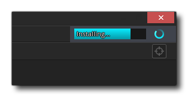

Die GameMaker Studio 2 IDE sucht regelmäßig nach Updates und lädt sie dann automatisch herunter. Einige dieser Aktualisierungen sind optional und Sie können entscheiden, sie nicht zu installieren, wenn Sie nicht möchten oder denken, dass einige Änderungen ein Projekt, das Sie veröffentlichen möchten, beeinträchtigen können. Es gibt jedoch einige Updates, die wichtige Korrekturen oder Verbesserungen enthalten, die nicht übersprungen werden können. In diesen Fällen erzwingt GameMaker Studio 2 eine Aktualisierung. 
Laufzeit aktualisieren
GameMaker Studio 2 ist mehr als nur eine IDE und verfügt über eine Reihe von verschiedenen Laufzeit-Tools, mit denen Sie im Hintergrund Spiele für die verschiedenen verfügbaren Zielplattformen erstellen können. Diese Werkzeuge sind hauptsächlich die verschiedenen Läufer und Compiler, die jede Plattform benötigt, und Sie können tatsächlich mehrere von ihnen gleichzeitig haben. Dies bedeutet, dass Sie auswählen können, welche Compiler-Version und welche Runner-Version Sie verwenden sollten, sollten Sie Probleme mit dem aktuellen Problem gefunden haben oder auf eine bestimmte Zielversion oder Plattform abzielen. Die Tools werden automatisch aktualisiert, wenn eine neue Version verfügbar ist. Sie können dann jedoch mithilfe der Runtime-Feeds-Einstellungen auswählen, welche Sie tatsächlich verwenden möchten. Weitere Informationen zu Runtime-Updates finden Sie unter Einstellungen - Runtime-Feeds.
Beachten Sie, dass das Herunterladen und Installieren einer Laufzeit einige Minuten dauern kann. Sie können jedoch eine Fortschrittsleiste für den Download oben rechts in der IDE sehen: 